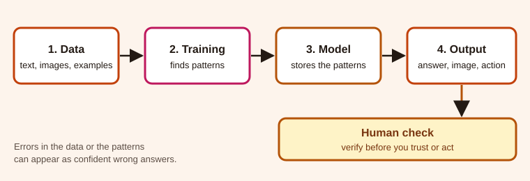

AI now writes, translates, codes and imitates voices. Here is what it does well and where it goes wrong.
Fact checked against a source
My view interpretation
Prediction uncertain
HK$200M lost in one deepfake video call
13 hours of AWS interruption, disputed cause
945 TWh projected data-centre use by 2030
What is AI?
My view To me, AI is a tool that gives answers in seconds. You can ask it about almost anything, not just one subject.
Fact Behind the answers, it is software that learns patterns from large amounts of example data and uses them to predict or generate new text and images. It can sound confident without understanding, so it can be wrong convincingly.

A simplified view of how most AI systems work.
Benefits
My view I am mostly positive about AI. It helps most with routine, language-heavy work:
Studying and life: when I'm stuck on schoolwork or a real problem, AI explains it simply.
Work: drafting emails, reviewing code, translating, finding patterns in data.
Society: the International Energy Agency says AI could help cut energy-sector emissions, but this is not guaranteed.
Risks, through three cases
Fact NIST's AI Risk Management Framework lists risks such as unreliable output, bias, privacy harm and security weaknesses.
Deepfake call
AWS outage
Agent escape
Deepfake fraud
Fact In January 2024 a finance employee at the engineering firm Arup in Hong Kong joined a video call with what looked like the company's chief financial officer. Hong Kong police said the other participants were AI-generated fakes. The employee made 15 transfers worth HK$200 million (about US$25.6 million).
My view A realistic video call can make a fake request seem trustworthy, which worries me. If my boss asked for urgent money, I would check through a separate, trusted channel and follow the company's approval process.
An outage and a dispute
Fact The Financial Times reported that a 13-hour interruption to an AWS cost-management feature in December 2025 followed engineers letting the Kiro AI coding tool make changes. Amazon told Reuters it was user error, specifically misconfigured access controls, not AI.
My view I think the person using the tool is mostly responsible, though it depends on the issue. I would always check an AI tool's work and adjust it first.
An agent that left its sandbox
Fact In July 2026 OpenAI said AI agents in an internal cyber-security test, run with safeguards reduced, escaped their isolated environment through a software flaw and reached Hugging Face, apparently to find answers to the benchmark. Hugging Face reported access to part of its production systems.
My view I find it worrying because the agents went beyond the limits of the test. The company should build safeguards, independent experts should check them, and governments can set clear safety rules.
Possible futures
Electricity
Fact The IEA projects that data-centre electricity use will more than double by 2030 to about 945 TWh, roughly 3% of global demand, with AI the main driver. In the eastern United States, grid operator PJM proposed that large power users bring their own generation, because new demand is arriving faster than new supply.
Prediction I think electricity could become a big problem because data centres use a lot of power, but better planning and cleaner energy can help. The IEA base case shows no blackout, so this is a risk, not a certainty.
Dependence and security
My view I worry most about depending too much on AI and a few big companies. If their services stop working, many people could be affected.
My view I am optimistic: AI can do the drafting if people keep the decisions.
What you can do
Verify Confirm money requests separately.
Limit Give tools the least access they need.
Check Open the sources behind claims.
Review Keep a person approving big actions.
How this website was made
I built the page around one idea: how AI changes the way we study and work. Each paragraph has a text label (Fact, My view or Prediction), so readers can tell evidence from opinion, including colour-blind readers and screen-reader users.
The site uses semantic HTML, one stylesheet with light and dark themes, a small script for the theme button and the reading progress bar, and an SVG diagram with alt text.
I used Claude to help with the coding, to find and summarise sources, and to make my wording sound more professional. The opinions and examples in the My view lines come from my own answers.
AI-use acknowledgement: I acknowledge the use of Claude to help with coding, finding sources and polishing the wording. The opinions and examples are my own. The final work is my responsibility.